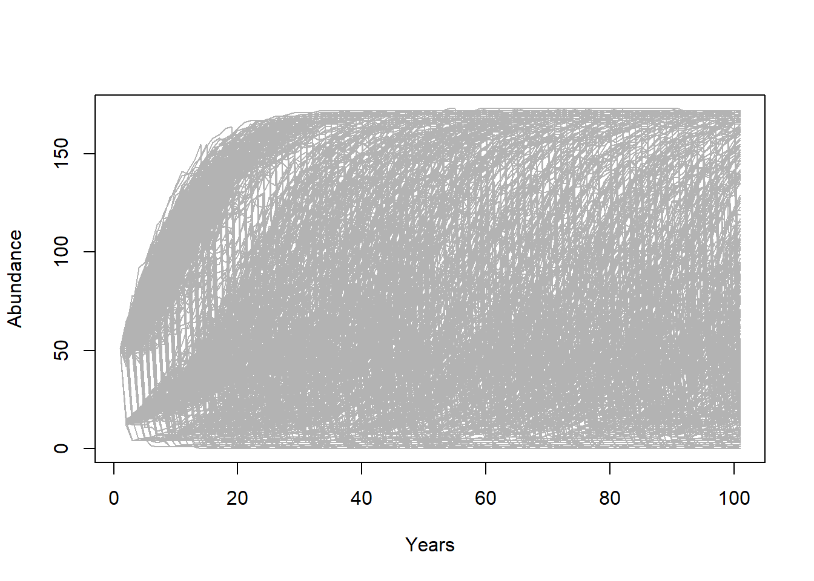
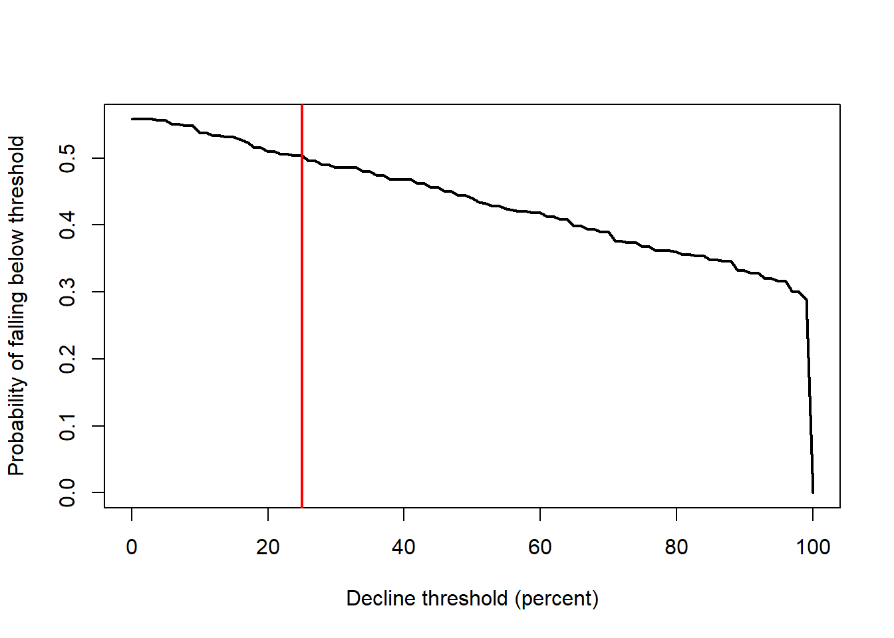
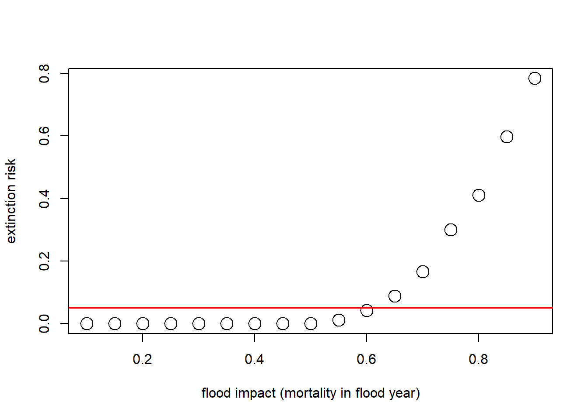

Population Viability Analysis
NRES 470/670
Spring 2019
Final projects:
Just a heads up about final projects. Working PVA and document justifying decisions is due this Friday, April 5!
Population Viability Analysis (PVA)
Population Viability Analysis (PVA) integrates everything we have studied so far and more. At its most basic level, PVA is the process of building and running a formal predictive population model for the purpose of gaining insight about present and future conservation status, or ranking alternative management options.
Q: Does PVA belong to the small-population paradigm?
Q: Does PVA belong to the declining-population paradigm?
Q: Are PVA models always stochastic?
Q: Are PVA models always density-dependent?
Q: Are PVA models always age-structured?
Q: Are PVA models always spatially-explicit?
The PVA process (recipe for PVA!)

NOTE: The process of building a PVA model is iterative and non-linear.
For example – after running your model (step 4) and looking at your results (step 5) you might realize that the model is totally unrealistic. This might prompt you to go back and change your conceptual model of the life history (step 1), and re-parameterize your model (step 2).
Step 1: Life history
The first step is to conceptualize the life history for your species of interest. This is where you might put together a life history diagram, and think about the following questions:
- How many life stages should I include?
- Which life stages are reproductive?
- Which vital rates are density-dependent?
- Which vital rates are subject to environmental stochasticity?
- Which vital rates could be altered by management activities?
- Are there any important catastrophes that can affect the system?
Q: is there ever a case where you WON’T include demographic stochasticity in your model?
Step 2: Parameterize the demographic model!
This is where you attach real numbers to the stocks and flows in your conceptual life history diagram. Remember that these parameters are more than just survival and fecundity. It’s also:
- Annual variation in survival and fecundity (environmental stochasticity).
- Initial abundances
- Density dependence functions and parameters (including K)
- Allee thresholds
- Catastrophe effect sizes and probabilities
- Effects of management actions.
- And more…
[stone soup analogy to model parameterization!]
Step 3: Spatial structure!
If you want to ask spatial questions, your model needs to be spatially explicit, or at least consider spatial structure in some way. The kinds of questions you might think about include:
- How many discrete populations?
- Do different populations have different mean vital rates?
- Is environmental stochasticity spatially correlated?
- At what rate do individuals move among these populations?
- Can connectivity be enhanced via management?
- Are dispersal rates density-dependent?
Step 4: Simulate!
You know how to simulate populations now- you can choose whether it makes sense to use R, InsightMaker, Vortex, or some other software or programming platform for your simulations!
Either way, you can be creative- set up the simulations so that they can help you answer your key research questions! You are in control- you can set up the simulations so that they give you the kinds of data you need!!
- What scenarios do you want to test?
- How many replicates are sufficient?
- What data do you need to store for your plots and analyses?
Step 5: Results
Finally, you need to make sense of all the simulations you just ran.
There are two types of data analysis tools that you will need to be able to use the simulation results to answer your questions: graphical visualization and statistical analysis.
These tools- visualization and statistical analysis - are diverse, and there is no one-size-fits-all way that you should visualize and analyze your simulation results. It really depends on your question!!
I will give you some ideas here about graphical representations in the demo PVA - but just remember you are not limited to these ideas- be creative! Since this class is not a statistics class, I don’t necessarily expect you to do sophisticated stats as part of your project- but Ben and I can work with your groups individually to figure out some simple stats that make sense for your project.
A Simple Demonstration PVA
To illustrate some of these concepts, let’s build a very simple PVA model in R. If you want to follow along, click here
We are using R because of its flexible and powerful visualization tools.
Step 1: conceptualize the life history
For simplicity, let’s ignore age structure for now - this is just a simple scalar population model!
Also let’s ignore parameter uncertainty too!
Step 2: parameterize!
Here is the basic model parameterization:
##############
# Demonstration PVA
##############
####
# Basic life history parameters
####
R_max <- 1.15 # Maximum rate of growth
Init_N <- 51 # Initial abundance
K <- 175 # Carrying capacity
####
# Environmental stochasticity
####
SD_lambda <- 0.11 # standard deviation of lambda
####
# Density-dependence (Ricker model)
####
Ricker <- function(prev_abund){ # this is a function for computing next-year abundance -- includes env stochasticity
prev_abund * exp(log(rnorm(1,R_max,SD_lambda))*(1-(prev_abund/K)))
}
####
# Catastrophe
####
Flood_prob <- 0.05 # 5% chance of major flood
Flood_lambda <- 0.25 # 25% of population can survive a flood Step 3: spatial structure
Let’s ignore spatial structure!
Step 4: simulate!
Now we can use these parameters to build and run a simple PVA model:
####
# Basic simulation parameters
####
nyears <- 100 # number of years
nreps <- 500 # number of replicates
PVAdemo <- function(nreps,nyears,Init_N,R_max,K,Flood_prob,Flood_lambda){
#browser()
PopArray2 <- array(0,dim=c((nyears+1),nreps))
## start looping through replicates
for(rep in 1:nreps){
# set initial abundance
PopArray2[1,rep] <- Init_N # initial abundance
### loop through years
for(y in 2:(nyears+1)){
### stochasticity and d-d
nextyear <- max(0,trunc(Ricker(PopArray2[y-1,rep])))
### catastrophe
if(runif(1)<Flood_prob) nextyear <- nextyear*Flood_lambda
PopArray2[y,rep] <- nextyear
}
}
return(PopArray2)
}
### Run the PVA!
Default <- PVAdemo(nreps,nyears,Init_N,R_max,K,Flood_prob,Flood_lambda)Graphical visualization
There are several types of visualizations that you might want to use for your PVA models:
The first is to look at the “cloud” of abundance trajectories. This is the same type of figure we have seen in InsightMaker using the “Sensitivity testing” tool.
PlotCloud <- function(simdata){
plot(c(1:101),simdata[,1],col=gray(0.7),type="l",ylim=c(0,max(simdata)),xlab="Years",ylab="Abundance")
for(r in 2:ncol(simdata)){
lines(c(1:101),simdata[,r],col=gray(0.7),type="l")
}
}
PlotCloud(Default)
Okay, what do we learn from this? Really, it’s a mess!!!
If our question is about extinction risk, maybe we want to plot extinction risk by time…
Extinction_byyear <- function(simdata){
apply(simdata,1,function(t) length(which(t==0)))/ncol(simdata)
}
plot(c(1:101),Extinction_byyear(Default),type="l",lwd=2,xlab="year",ylab="extinction risk")
abline(h=0.05,col="red",lwd=2)
Maybe our question is about the probability of decline over 100 years …
In that case maybe we should present a histogram of final abundances…
hist(Default[nrow(Default),],xlab="Final abundance after 100 years",ylab="Number of replicates",main="")
abline(v=Init_N,col="green",lwd=2)
Or we could plot the extent of decline vs the probability of falling below that threshold at year 100.
declines <- seq(0,100,by=1)
declineprob <- numeric(length(declines))
for(s in 1:length(declines)){
declineprob[s] <- length(which(Default[nrow(Default),]<(Init_N-(declines[s]/100)*Init_N)))/ncol(Default)
}
plot(declines,declineprob,type="l",lwd=2,xlab="Decline threshold (percent)",ylab="Probability of falling below threshold")
abline(v=25,col="red",lwd=2)
What if our question is about the effect of flooding on extinction risk. Let’s imagine that the probability of flooding is not expected to change with climate change, but that the intensity of the flood damage is likely to increase substantially!
Currently, floods generally result in a 10% population reduction. But climate change could increase this number to as much as 90%. Let’s look at how much this could increase extinction risk!
Exctinction_risk <- function(simdata){
length(which(simdata[nrow(simdata),]==0))/ncol(simdata)
}
flood_lambdas <- seq(0.9,0.1,by=-0.05)
all_scenarios <- numeric(length(flood_lambdas))
for(scenario in 1:length(flood_lambdas)){
PVA <- PVAdemo(nreps,nyears,Init_N,R_max,K,Flood_prob,flood_lambdas[scenario])
all_scenarios[scenario] <- Exctinction_risk(PVA)
}
plot(flood_lambdas,all_scenarios,type="p",cex=2,xlab="flood impact (lambda in flood year)",ylab="extinction risk")
abline(h=0.05,col="red",lwd=2)